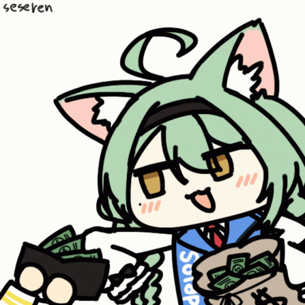

Masaru's Profile
Hey there. I go by Masaru, but feel free to call me Vincent. This site is currently under development and is dedicated to my art career at @masaru9002. Check out my Twitter and Pixiv account if you have spare time. Thank you!!
Hey there. I go by Masaru, but feel free to call me Vincent. This site is currently under development and is dedicated to my art career at @masaru9002. Check out my Twitter and Pixiv account if you have spare time. Thank you!!
I have 1 year of experience in digital art, first started with Ibis Paint X on the smartphone, then switched to Wacom Intuos S CTL-4100 & HP Victus 16. Though relatively inexperienced, I certainly can try my best for comms and produce a satisfactory outcome. I cannot create full body drawings at an expert level yet, but my artstyle is very flexible and can very according to the customer's liking. R18 requests are accepted.

This page was coded by me, Masaru. Yup, that's right, 100% handmade. It's not that good yet though, just give me more time to learn stuff. Do feel free to hire me to make a website for you! :D

Thank you for actually clicking this button, truly. However, this feature is in development, so stay tuned. Meanwhile, you can still do that by checking my Pixiv!
